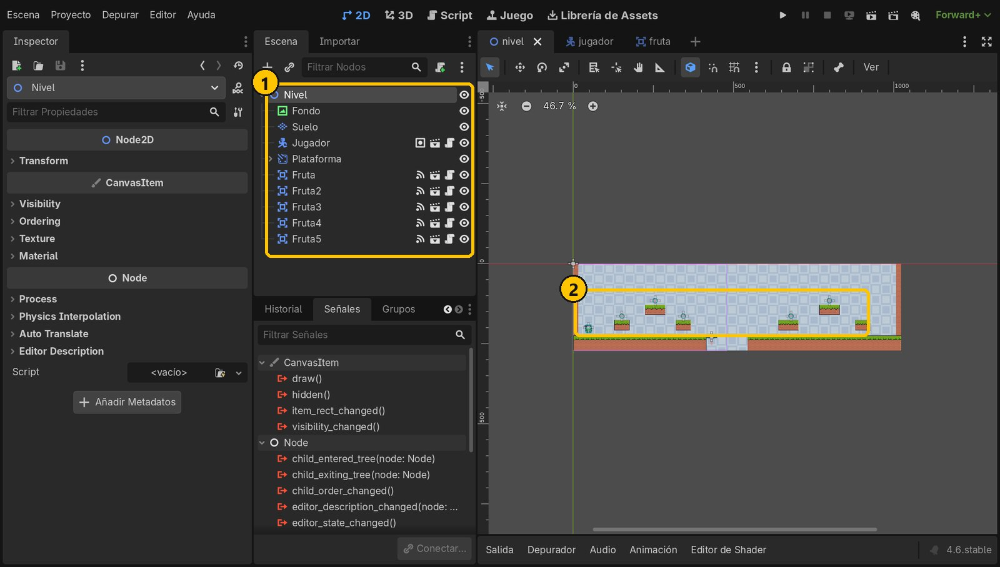
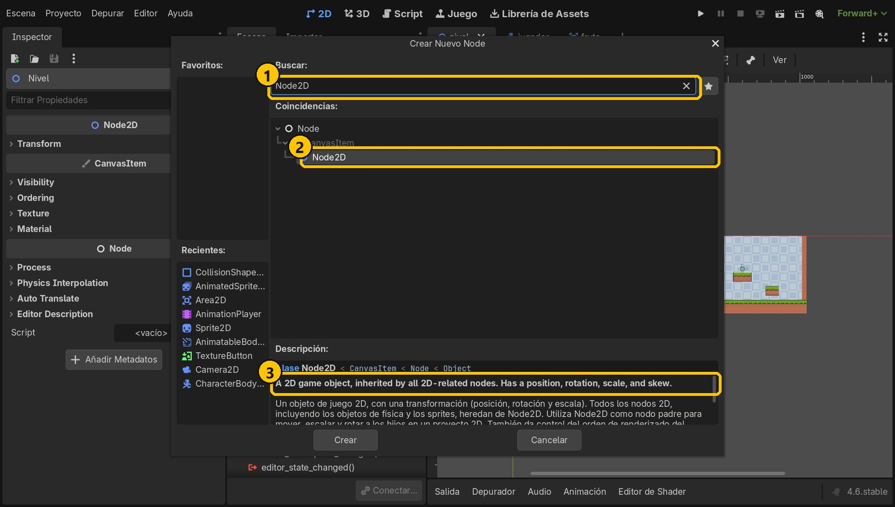
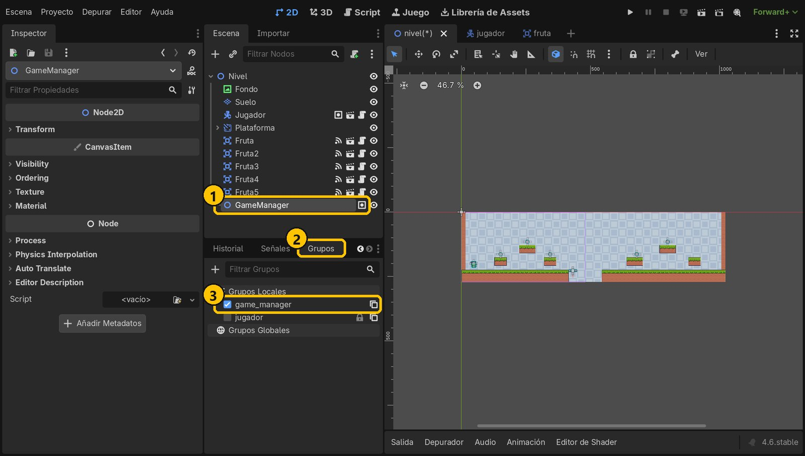
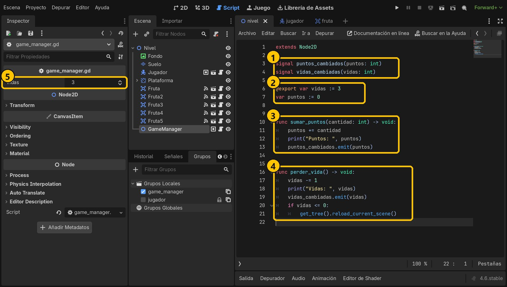
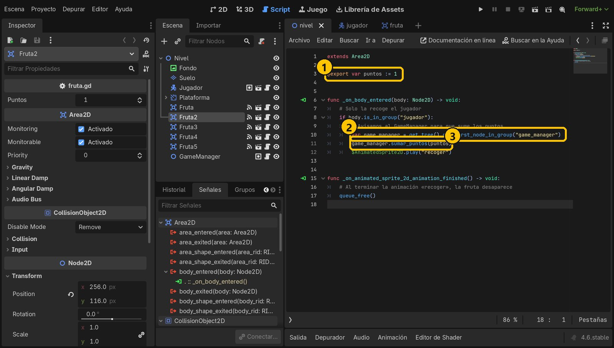
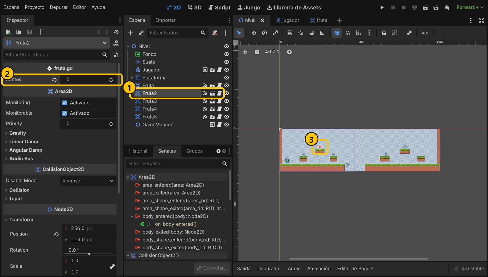
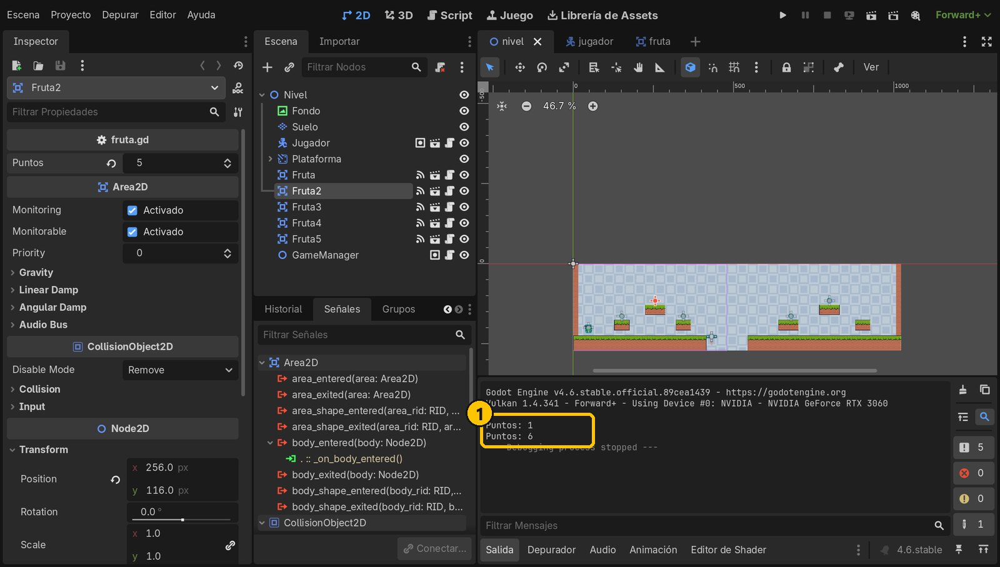

Objetivo
Al terminar, el nivel tendrá un nodo GameManager con los puntos y las vidas. Cada fruta, al recogerla, le pedirá que sume sus puntos, y cada fruta podrá valer distinto desde el Inspector.
Partimos de: El proyecto del tutorial 4: cinco frutas en el nivel que desaparecen al tocarlas y escriben «¡Fruta recogida!» en la salida.
Nodos y conceptos
GameManagerUn nodo normal (aquí un Node2D) cuyo script guarda los datos de toda la partida. Así no están repartidos entre las frutas, el jugador…
signalCon signal puntos_cambiados creamos nuestras propias señales. emit() las lanza, y cualquier nodo conectado se entera.
get_first_node_in_group()Busca en la escena el primer nodo de un grupo. Con él cada fruta encuentra al GameManager sin saber dónde está.
@exportHace que una variable aparezca en el Inspector: así cada fruta puede valer distintos puntos sin tocar el código.
Paso a paso
1Punto de partida
Abre nivel.tscn. Tenemos cinco frutas que se recogen, pero nadie lleva la cuenta. Vamos a crear un nodo que guarde los datos de la partida.

- 1Escena del nivel
- 2Cinco frutas
2Añade un Node2D
Selecciona Nivel, pulsa + y añade un Node2D. Renómbralo a GameManager.

- 1Node2D
- 2Node2D
- 3Un nodo 2D
3Ponlo en un grupo
Con GameManager seleccionado, en el panel Grupos pulsa + y crea el grupo game_manager. Por este grupo lo encontrarán las frutas.

- 1GameManager
- 2Panel Grupos
- 3game_manager
4El script del GameManager
Añade un script a GameManager (game_manager.gd, sin plantilla) con este código. Declara dos señales propias, las variables vidas (con @export, aparece en el Inspector) y puntos, y dos funciones: sumar_puntos y perder_vida. Cada una cambia su dato, lo muestra y emite su señal. Si las vidas llegan a 0, el nivel se reinicia.
extends Node2D
signal puntos_cambiados(puntos: int)
signal vidas_cambiadas(vidas: int)
@export var vidas := 3
var puntos := 0
func sumar_puntos(cantidad: int) -> void:
puntos += cantidad
print("Puntos: ", puntos)
puntos_cambiados.emit(puntos)
func perder_vida() -> void:
vidas -= 1
print("Vidas: ", vidas)
vidas_cambiadas.emit(vidas)
if vidas <= 0:
get_tree().reload_current_scene()
- 1Señales propias
- 2Los datos
- 3Sumar puntos
- 4Perder una vida
- 5Vidas en el Inspector
5Las frutas avisan al GameManager
Abre fruta.gd. Añade @export var puntos := 1 y cambia el print por dos líneas: buscamos el GameManager por su grupo y le pedimos que sume los puntos de esta fruta.
extends Area2D
@export var puntos := 1
func _on_body_entered(body: Node2D) -> void:
# Solo la recoge el jugador
if body.is_in_group("jugador"):
# Avisamos al GameManager para que sume los puntos
var game_manager = get_tree().get_first_node_in_group("game_manager")
game_manager.sumar_puntos(puntos)
$AnimatedSprite2D.play("recoger")
func _on_animated_sprite_2d_animation_finished() -> void:
# Al terminar la animación «recoger», la fruta desaparece
queue_free()
- 1Puntos de la fruta
- 2Busca el GameManager
- 3Le pide sumar
6Una fruta que vale más
En el nivel, selecciona Fruta2 (la de la isla alta, más difícil). Gracias a @export, en el Inspector aparece Puntos: ponle 5. Guarda.

- 1Fruta2
- 2Vale 5
- 3La de la isla alta
7Ejecuta y mira la salida
Ejecuta y recoge frutas. En el panel Salida se ve cómo sube la cuenta: la fruta normal suma 1 y la de la isla alta, 5. Los puntos ya viven en un solo sitio; en el próximo tutorial los mostraremos en pantalla.

- 11 y luego 6
Resumen
- Un GameManager guarda los datos de la partida en un solo sitio.
- Las frutas lo encuentran por su grupo y le piden que sume.
- Con
signalyemit()avisa cuando algo cambia, y@exportdeja ajustar cada fruta desde el Inspector.
Si algo falla
- Error «Cannot call method 'sumar_puntos' on a null value». La fruta no encuentra el GameManager: comprueba que está en el grupo
game_manager(escrito igual) y que está en la escena del nivel. - No aparece «Puntos» en el Inspector de la fruta. Guarda
fruta.gdy vuelve a seleccionar la fruta. La variable debe llevar@export. - La fruta de 5 suma 1. Cambia Puntos en la fruta del nivel (la instancia), no hace falta tocar
fruta.tscn.
Prueba tú
- Pon a la fruta más escondida 10 puntos.
- Haz que, al llegar a 10 puntos, el GameManager escriba «¡Récord!» en la salida.
- Prueba
perder_vida()llamándola desde la fruta en vez desumar_puntos: con 3 frutas, el nivel se reinicia.